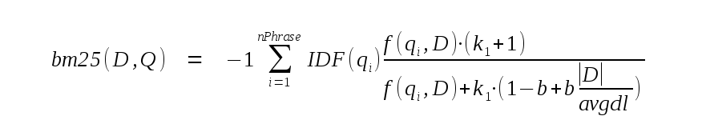

Choose any three.
|
|
Overview
1. Overview of FTS5
FTS5 is an SQLite virtual table module that provides full-text search functionality to database applications. In their most elementary form, full-text search engines allow the user to efficiently search a large collection of documents for the subset that contain one or more instances of a search term. The search functionality provided to world wide web users by Google is, among other things, a full-text search engine, as it allows users to search for all documents on the web that contain, for example, the term "fts5".
To use FTS5, the user creates an FTS5 virtual table with one or more columns. For example:
CREATE VIRTUAL TABLE email USING fts5(sender, title, body); |
It is an error to add types, constraints or PRIMARY KEY declarations to a CREATE VIRTUAL TABLE statement used to create an FTS5 table. Once created, an FTS5 table may be populated using INSERT, UPDATE or DELETE statements like any other table. Like any other table with no PRIMARY KEY declaration, an FTS5 table has an implicit INTEGER PRIMARY KEY field named rowid.
Not shown in the example above is that there are also various options that may be provided to FTS5 as part of the CREATE VIRTUAL TABLE statement to configure various aspects of the new table. These may be used to modify the way in which the FTS5 table extracts terms from documents and queries, to create extra indexes on disk to speed up prefix queries, or to create an FTS5 table that acts as an index on content stored elsewhere.
Once populated, there are three ways to execute a full-text query against the contents of an FTS5 table:
- Using a MATCH operator in the WHERE clause of a SELECT statement, or
- Using an equals ("=") operator in the WHERE clause of a SELECT statement, or
- using the table-valued function syntax.
If using the MATCH or = operators, the expression to the left of the MATCH operator must be the name of the FTS5 table. The expression on the right must be a text value specifying the term to search for. For the table-valued function syntax, the term to search for is specified as the first table argument. For example:
-- Query for all rows that contain at least once instance of the term
-- "fts5" (in any column). The following three queries are equivalent.
SELECT * FROM email WHERE email MATCH 'fts5';
SELECT * FROM email WHERE email = 'fts5';
SELECT * FROM email('fts5');
|
By default, FTS5 full-text searches are case-independent. Like any other SQL query that does not contain an ORDER BY clause, the example above returns results in an arbitrary order. To sort results by relevance (most to least relevant), an ORDER BY may be added to a full-text query as follows:
-- Query for all rows that contain at least once instance of the term -- "fts5" (in any column). Return results in order from best to worst -- match. SELECT * FROM email WHERE email MATCH 'fts5' ORDER BY rank; |
As well as the column values and rowid of a matching row, an application may use FTS5 auxiliary functions to retrieve extra information regarding the matched row. For example, an auxiliary function may be used to retrieve a copy of a column value for a matched row with all instances of the matched term surrounded by html <b></b> tags. Auxiliary functions are invoked in the same way as SQLite scalar functions, except that the name of the FTS5 table is specified as the first argument. For example:
-- Query for rows that match "fts5". Return a copy of the "body" column
-- of each row with the matches surrounded by <b></b> tags.
SELECT highlight(email, 2, '<b>', '</b>') FROM email('fts5');
|
A description of the available auxiliary functions, and more details regarding configuration of the special "rank" column, are available below. Custom auxiliary functions may also be implemented in C and registered with FTS5, just as custom SQL functions may be registered with the SQLite core.
As well as searching for all rows that contain a term, FTS5 allows the user to search for rows that contain:
- any terms that begin with a specified prefix,
- "phrases" - sequences of terms or prefix terms that must feature in a document for it to match the query,
- sets of terms, prefix terms or phrases that appear within a specified proximity of each other (these are called "NEAR queries"), or
- boolean combinations of any of the above.
Such advanced searches are requested by providing a more complicated FTS5 query string as the text to the right of the MATCH operator (or = operator, or as the first argument to a table-valued function syntax). The full query syntax is described here.
2. Compiling and Using FTS5
2.1. Building FTS5 as part of SQLite
As of version 3.9.0, FTS5 is included as part of the SQLite amalgamation. It is disabled by default. If using the two autoconf build system, it is enabled by specifying the "--enable-fts5" option when running the configure script.
Or, if sqlite3.c is compiled using some other build system, by arranging for the SQLITE_ENABLE_FTS5 pre-processor symbol to be defined.
2.2. Building a Loadable Extension
Alternatively, FTS5 may be built as a loadable extension.
The canonical FTS5 source code consists of a series of *.c and other files in the "ext/fts5" directory of the SQLite source tree. A build process reduces this to just two files - "fts5.c" and "fts5.h" - which may be used to build an SQLite loadable extension.
- Obtain the latest SQLite code from fossil.
- Create a Makefile as described in How To Compile SQLite.
- Build the "fts5.c" target. Which also creates fts5.h.
$ wget -c http://www.sqlite.org/src/tarball/SQLite-trunk.tgz?uuid=trunk -O SQLite-trunk.tgz .... output ... $ tar -xzf SQLite-trunk.tgz $ cd SQLite-trunk $ ./configure && make fts5.c ... lots of output ... $ ls fts5.[ch] fts5.c fts5.h |
The code in "fts5.c" may then be compiled into a loadable extension or statically linked into an application as described in Compiling Loadable Extensions. There are two entry points defined, both of which do the same thing:
- sqlite3_fts_init
- sqlite3_fts5_init
The other file, "fts5.h", is not required to compile the FTS5 extension. It is used by applications that implement custom FTS5 tokenizers or auxiliary functions.
3. Full-text Query Syntax
The following block contains a summary of the FTS query syntax in BNF form. A detailed explanation follows.
<phrase> := string [*]
<phrase> := <phrase> + <phrase>
<neargroup> := NEAR ( <phrase> <phrase> ... [, N] )
<query> := [ [-] <colspec> :] <phrase>
<query> := [ [-] <colspec> :] <neargroup>
<query> := ( <query> )
<query> := <query> AND <query>
<query> := <query> OR <query>
<query> := <query> NOT <query>
<colspec> := colname
<colspec> := { colname1 colname2 ... }
|
Within an FTS expression a string may be specified in one of two ways:
-
By enclosing it in double quotes ("). Within a string, any embedded double quote characters may be escaped SQL-style - by adding a second double-quote character.
-
As an FTS5 bareword that is not "AND", "OR" or "NOT" (case sensitive). An FTS5 bareword is a string of one or more consecutive characters that are all either:
- Non-ASCII range characters (i.e. unicode codepoints greater than 127), or
- One of the 52 upper and lower case ASCII characters, or
- One of the 10 decimal digit ASCII characters, or
- The underscore character (unicode codepoint 96).
- The substitute character (unicode codepoint 26).
FTS queries are made up of phrases. A phrase is an ordered list of one or more tokens. A string is transformed into a phrase by passing it to the FTS table tokenizer. Two phrases can be concatenated into a single large phrase using the "+" operator. For example, assuming the tokenizer module being used tokenizes the input "one.two.three" to three separate tokens, the following three queries all specify the same phrase:
... MATCH '"one two three"' ... MATCH 'one + two + three' ... MATCH '"one two" + three' ... MATCH 'one.two.three' |
A phrase matches a document if the document contains at least one sub-sequence of tokens that matches the sequence of tokens that make up the phrase.
If a "*" character follows a string within an FTS expression, then the final token extracted from the string is marked as a prefix token. As you might expect, a prefix token matches any document token of which it is a prefix. For example, the first two queries in the following block will match any document that contains the token "one" immediately followed by the token "two" and then any token that begins with "thr".
... MATCH '"one two thr" * ' ... MATCH 'one + two + thr*' ... MATCH '"one two thr*"' -- May not work as expected! |
The final query in the block above may not work as expected. Because the "*" character is inside the double-quotes, it will be passed to the tokenizer, which will likely discard it (or perhaps, depending on the specific tokenizer in use, include it as part of the final token) instead of recognizing it as a special FTS character.
Two or more phrases may be grouped into a NEAR group. A NEAR group is specified by the token "NEAR" (case sensitive) followed by an open parenthesis character, followed by two or more whitespace separated phrases, optionally followed by a comma and the numeric parameter N, followed by a close parenthesis. For example:
... MATCH 'NEAR("one two" "three four", 10)'
... MATCH 'NEAR("one two" thr* + four)'
|
If no N parameter is supplied, it defaults to 10. A NEAR group matches a document if the document contains at least one clump of tokens that:
- contains at least one instance of each phrase, and
- for which the number of tokens between the end of the first phrase and the beginning of the last phrase in the clump is less than or equal to N.
For example:
CREATE VIRTUAL TABLE f USING fts5(x);
INSERT INTO f(rowid, x) VALUES(1, 'A B C D x x x E F x');
... MATCH 'NEAR(e d, 4)'; -- Matches!
... MATCH 'NEAR(e d, 3)'; -- Matches!
... MATCH 'NEAR(e d, 2)'; -- Does not match!
... MATCH 'NEAR("c d" "e f", 3)'; -- Matches!
... MATCH 'NEAR("c" "e f", 3)'; -- Does not match!
... MATCH 'NEAR(a d e, 6)'; -- Matches!
... MATCH 'NEAR(a d e, 5)'; -- Does not match!
... MATCH 'NEAR("a b c d" "b c" "e f", 4)'; -- Matches!
... MATCH 'NEAR("a b c d" "b c" "e f", 3)'; -- Does not match!
|
A single phrase or NEAR group may be restricted to matching text within a specified column of the FTS table by prefixing it with the column name followed by a colon character. Or to a set of columns by prefixing it with a whitespace separated list of column names enclosed in parenthesis ("curly brackets") followed by a colon character. Column names may be specified using either of the two forms described for strings above. Unlike strings that are part of phrases, column names are not passed to the tokenizer module. Column names are case-insensitive in the usual way for SQLite column names - upper/lower case equivalence is understood for ASCII-range characters only.
... MATCH 'colname : NEAR("one two" "three four", 10)'
... MATCH '"colname" : one + two + three'
... MATCH '{col1 col2} : NEAR("one two" "three four", 10)'
... MATCH '{col2 col1 col3} : one + two + three'
|
If a column filter specification is preceded by a "-" character, then it is interpreted as a list of column not to match against. For example:
-- Search for matches in all columns except "colname"
... MATCH '- colname : NEAR("one two" "three four", 10)'
-- Search for matches in all columns except "col1", "col2" and "col3"
... MATCH '- {col2 col1 col3} : one + two + three'
|
Phrases and NEAR groups may be arranged into expressions using boolean operators. In order of precedence, from highest (tightest grouping) to lowest (loosest grouping), the operators are:
| Operator | Function |
|---|---|
<query1> NOT <query2>
| Matches if query1 matches and query2 does not match. |
<query1> AND <query2>
| Matches if both query1 and query2 match. |
<query1> OR <query2>
| Matches if either query1 or query2 match. |
Parenthesis may be used to group expressions in order to modify operator precedence in the usual ways. For example:
-- Matches documents that contain at least one instance of either "one" -- or "two", but do not contain any instances of token "three". ... MATCH 'one OR two NOT three' -- Match all documents that contain the token "two" but not "three", or -- contain the token "one". ... MATCH 'one OR (two NOT three)' |
Phrases and NEAR groups may also be connected by implicit AND operators. For simplicity, these are not shown in the BNF grammar above. Essentially, any sequence of phrases or NEAR groups (including those restricted to matching specified columns) separated only by whitespace are handled as if there were an implicit AND operator between each pair of phrases or NEAR groups. Implicit AND operators are never inserted after or before an expression enclosed in parenthesis. For example:
... MATCH 'one two three' -- 'one AND two AND three' ... MATCH 'three "one two"' -- 'three AND "one two"' ... MATCH 'NEAR(one two) three' -- 'NEAR(one two) AND three' ... MATCH 'one OR two three' -- 'one OR two AND three' ... MATCH '(one OR two) three' -- Syntax error! ... MATCH 'func(one two)' -- Syntax error! |
4. FTS5 Table Creation and Initialization
Each argument specified as part of a "CREATE VIRTUAL TABLE ... USING fts5 ..." statement is either a column declaration or a configuration option. A column declaration consists of one or more whitespace separated FTS5 barewords or string literals quoted in any manner acceptable to SQLite.
The first string or bareword in a column declaration is the column name. It is an error to attempt to name an fts5 table column "rowid" or "rank", or to assign the same name to a column as is used by the table itself. This is not supported.
Each subsequent string or bareword in a column declaration is a column option that modifies the behaviour of that column. Column options are case-independent. Unlike the SQLite core, FTS5 considers unrecognized column options to be errors. Currently, the only option recognized is "UNINDEXED" (see below).
A configuration option consists of an FTS5 bareword - the option name - followed by an "=" character, followed by the option value. The option value is specified using either a single FTS5 bareword or a string literal, again quoted in any manner acceptable to the SQLite core. For example:
CREATE VIRTUAL TABLE mail USING fts5(sender, title, body, tokenize = 'porter ascii'); |
There are currently the following configuration options:
- The "tokenize" option, used to configure a custom tokenizer.
- The "prefix" option, used to add prefix indexes to an FTS5 table.
- The "content" option, used to make the FTS5 table an external content or contentless table.
- The "content_rowid" option, used to set the rowid field of an external content table.
- The "columnsize" option, used to configure whether or not the size in tokens of each value in the FTS5 table is stored separately within the database.
- The "detail" option. This option may be used to reduce the size of the FTS index on disk by omitting some information from it.
4.1. The UNINDEXED column option
The contents of columns qualified with the UNINDEXED column option are not added to the FTS index. This means that for the purposes of MATCH queries and FTS5 auxiliary functions, the column contains no matchable tokens.
For example, to avoid adding the contents of the "uuid" field to the FTS index:
CREATE VIRTUAL TABLE customers USING fts5(name, addr, uuid UNINDEXED); |
4.2. Prefix Indexes
By default, FTS5 maintains a single index recording the location of each token instance within the document set. This means that querying for complete tokens is fast, as it requires a single lookup, but querying for a prefix token can be slow, as it requires a range scan. For example, to query for the prefix token "abc*" requires a range scan of all tokens greater than or equal to "abc" and less than "abd".
A prefix index is a separate index that records the location of all instances of prefix tokens of a certain length in characters used to speed up queries for prefix tokens. For example, optimizing a query for prefix token "abc*" requires a prefix index of three-character prefixes.
To add prefix indexes to an FTS5 table, the "prefix" option is set to either a single positive integer or a text value containing a white-space separated list of one or more positive integer values. A prefix index is created for each integer specified. If more than one "prefix" option is specified as part of a single CREATE VIRTUAL TABLE statement, all apply.
-- Two ways to create an FTS5 table that maintains prefix indexes for -- two and three character prefix tokens. CREATE VIRTUAL TABLE ft USING fts5(a, b, prefix='2 3'); CREATE VIRTUAL TABLE ft USING fts5(a, b, prefix=2, prefix=3); |
4.3. Tokenizers
The CREATE VIRTUAL TABLE "tokenize" option is used to configure the specific tokenizer used by the FTS5 table. The option argument must be either an FTS5 bareword, or an SQL text literal. The text of the argument is itself treated as a white-space series of one or more FTS5 barewords or SQL text literals. The first of these is the name of the tokenizer to use. The second and subsequent list elements, if they exist, are arguments passed to the tokenizer implementation.
Unlike option values and column names, SQL text literals intended as tokenizers must be quoted using single quote characters. For example:
-- The following are all equivalent CREATE VIRTUAL TABLE t1 USING fts5(x, tokenize = 'porter ascii'); CREATE VIRTUAL TABLE t1 USING fts5(x, tokenize = "porter ascii"); CREATE VIRTUAL TABLE t1 USING fts5(x, tokenize = "'porter' 'ascii'"); CREATE VIRTUAL TABLE t1 USING fts5(x, tokenize = '''porter'' ''ascii'''); -- But this will fail: CREATE VIRTUAL TABLE t1 USING fts5(x, tokenize = '"porter" "ascii"'); -- This will fail too: CREATE VIRTUAL TABLE t1 USING fts5(x, tokenize = 'porter' 'ascii'); |
FTS5 features three built-in tokenizer modules, described in subsequent sections:
- The unicode61 tokenizer, based on the Unicode 6.1 standard. This is the default.
- The ascii tokenizer, which assumes all characters outside of the ASCII codepoint range (0-127) are to be treated as token characters.
- The porter tokenizer, which implements the porter stemming algorithm.
It is also possible to create custom tokenizers for FTS5. The API for doing so is described here.
4.3.1. Unicode61 Tokenizer
The unicode tokenizer classifies all unicode characters as either "separator" or "token" characters. By default all space and punctuation characters, as defined by Unicode 6.1, are considered separators, and all other characters as token characters. Each contiguous run of one or more token characters is considered to be a token. The tokenizer is case-insensitive according to the rules defined by Unicode 6.1.
By default, diacritics are removed from all Latin script characters. This means, for example, that "A", "a", "À", "à", "Â" and "â" are all considered to be equivalent.
Any arguments following "unicode61" in the token specification are treated as a list of alternating option names and values. Unicode61 supports the following options:
| Option | Usage |
|---|---|
| remove_diacritics | This option should be set to "0" or "1". If it is set (the default), diacritics are removed from all latin script characters as described above. If it is clear, they are not. |
| tokenchars | This option is used to specify additional unicode characters that should be considered token characters, even if they are white-space or punctuation characters according to Unicode 6.1. All characters in the string that this option is set to are considered token characters. |
| separators | This option is used to specify additional unicode characters that should be considered as separator characters, even if they are token characters according to Unicode 6.1. All characters in the string that this option is set to are considered separators. |
For example:
-- Create an FTS5 table that does not remove diacritics from Latin
-- script characters, and that considers hyphens and underscore characters
-- to be part of tokens.
CREATE VIRTUAL TABLE ft USING fts5(a, b,
tokenize = "unicode61 remove_diacritics 0 tokenchars '-_'"
);
|
The fts5 unicode61 tokenizer is byte-for-byte compatible with the fts3/4 unicode61 tokenizer.
4.3.2. Ascii Tokenizer
The Ascii tokenizer is similar to the Unicode61 tokenizer, except that:
- All non-ASCII characters (those with codepoints greater than 127) are always considered token characters. If any non-ASCII characters are specified as part of the separators option, they are ignored.
- Case-folding is only performed for ASCII characters. So while "A" and "a" are considered to be equivalent, "Ã" and "ã" are distinct.
- The remove_diacritics option is not supported.
For example:
-- Create an FTS5 table that uses the ascii tokenizer, but does not
-- consider numeric characters to be part of tokens.
CREATE VIRTUAL TABLE ft USING fts5(a, b,
tokenize = "ascii separators '0123456789'"
);
|
4.3.3. Porter Tokenizer
The porter tokenizer is a wrapper tokenizer. It takes the output of some other tokenizer and applies the porter stemming algorithm to each token before it returns it to FTS5. This allows search terms like "correction" to match similar words such as "corrected" or "correcting". The porter stemmer algorithm is designed for use with English language terms only - using it with other languages may or may not improve search utility.
By default, the porter tokenizer operates as a wrapper around the default tokenizer (unicode61). Or, if one or more extra arguments are added to the "tokenize" option following "porter", they are treated as a specification for the underlying tokenizer that the porter stemmer uses. For example:
-- Two ways to create an FTS5 table that uses the porter tokenizer to -- stem the output of the default tokenizer (unicode61). CREATE VIRTUAL TABLE t1 USING fts5(x, tokenize = porter); CREATE VIRTUAL TABLE t1 USING fts5(x, tokenize = 'porter unicode61'); -- A porter tokenizer used to stem the output of the unicode61 tokenizer, -- with diacritics removed before stemming. CREATE VIRTUAL TABLE t1 USING fts5(x, tokenize = 'porter unicode61 remove_diacritics 1'); |
4.4. External Content and Contentless Tables
Normally, when a row is inserted into an FTS5 table, as well as the various full-text index entries and other data a copy of the row is stored in a private table managed by the FTS5 module. When column values are requested from the FTS5 table by the user or by an auxiliary function implementation, they are read from this private table. The "content" option may be used to create an FTS5 table that stores only FTS full-text index entries. Because the column values themselves are usually much larger than the associated full-text index entries, this can save significant database space.
There are two ways to use the "content" option:
- By setting it to an empty string to create a contentless FTS5 table. In this case FTS5 assumes that the original column values are unavailable to it when processing queries. Full-text queries and some auxiliary functions can still be used, but no column values apart from the rowid may be read from the table.
- By setting it to the name of a database object (table, virtual table or view) that may be queried by FTS5 at any time to retrieve the column values. This is known as an "external content" table. In this case all FTS5 functionality may be used, but it is the responsibility of the user to ensure that the contents of the full-text index are consistent with the named database object. If they are not, query results may be unpredictable.
4.4.1. Contentless Tables
A contentless FTS5 table is created by setting the "content" option to an empty string. For example:
CREATE VIRTUAL TABLE f1 USING fts5(a, b, c, content=''); |
Contentless FTS5 tables do not support UPDATE or DELETE statements, or INSERT statements that do not supply a non-NULL value for the rowid field. Contentless tables do not support REPLACE conflict handling. REPLACE and INSERT OR REPLACE statements are treated as regular INSERT statements. Rows may be deleted from a contentless table using an FTS5 delete command.
Attempting to read any column value except the rowid from a contentless FTS5 table returns an SQL NULL value.
4.4.2. External Content Tables
An external content FTS5 table is created by setting the content option to the name of a table, virtual table or view (hereafter the "content table") within the same database. Whenever column values are required by FTS5, it queries the content table as follows, with the rowid of the row for which values are required bound to the SQL variable:
SELECT <content_rowid>, <cols> FROM <content> WHERE <content_rowid> = ?; |
In the above, <content> is replaced by the name of the content table. By default, <content_rowid> is replaced by the literal text "rowid". Or, if the "content_rowid" option is set within the CREATE VIRTUAL TABLE statement, by the value of that option. <cols> is replaced by a comma-separated list of the FTS5 table column names. For example:
-- If the database schema is: CREATE TABLE tbl (a, b, c, d INTEGER PRIMARY KEY); CREATE VIRTUAL TABLE fts USING fts5(a, c, content=tbl, content_rowid=d); -- Fts5 may issue queries such as: SELECT d, a, c FROM tbl WHERE d = ?; |
The content table may also be queried as follows:
SELECT <content_rowid>, <cols> FROM <content> ORDER BY <content_rowid> ASC; SELECT <content_rowid>, <cols> FROM <content> ORDER BY <content_rowid> DESC; |
It is still the responsibility of the user to ensure that the contents of an external content FTS5 table are kept up to date with the content table. One way to do this is with triggers. For example:
-- Create a table. And an external content fts5 table to index it.
CREATE TABLE tbl(a INTEGER PRIMARY KEY, b, c);
CREATE VIRTUAL TABLE fts_idx USING fts5(b, c, content='tbl', content_rowid='a');
-- Triggers to keep the FTS index up to date.
CREATE TRIGGER tbl_ai AFTER INSERT ON tbl BEGIN
INSERT INTO fts_idx(rowid, b, c) VALUES (new.a, new.b, new.c);
END;
CREATE TRIGGER tbl_ad AFTER DELETE ON tbl BEGIN
INSERT INTO fts_idx(fts_idx, rowid, b, c) VALUES('delete', old.a, old.b, old.c);
END;
CREATE TRIGGER tbl_au AFTER UPDATE ON tbl BEGIN
INSERT INTO fts_idx(fts_idx, rowid, b, c) VALUES('delete', old.a, old.b, old.c);
INSERT INTO fts_idx(rowid, b, c) VALUES (new.a, new.b, new.c);
END;
|
Like contentless tables, external content tables do not support REPLACE conflict handling. Any operations that specify REPLACE conflict handling are handled using ABORT.
4.5. The Columnsize Option
Normally, FTS5 maintains a special backing table within the database that stores the size of each column value in tokens inserted into the main FTS5 table in a separate table. This backing table is used by the xColumnSize API function, which is in turn used by the built-in bm25 ranking function (and is likely to be useful to other ranking functions as well).
In order to save space, this backing table may be omitted by setting the columnsize option to zero. For example:
-- A table without the xColumnSize() values stored on disk: CREATE VIRTUAL TABLE ft USING fts5(a, b, c, columnsize=0); -- Three equivalent ways of creating a table that does store the -- xColumnSize() values on disk: CREATE VIRTUAL TABLE ft USING fts5(a, b, c); CREATE VIRTUAL TABLE ft USING fts5(a, b, c, columnsize=1); CREATE VIRTUAL TABLE ft USING fts5(a, b, columnsize='1', c); |
It is an error to set the columnsize option to any value other than 0 or 1.
If an FTS5 table is configured with columnsize=0 but is not a contentless table, the xColumnSize API function still works, but runs much more slowly. In this case, instead of reading the value to return directly from the database, it reads the text value itself and count the tokens within it on demand.
Or, if the table is also a contentless table, then the following apply:
-
The xColumnSize API always returns -1. There is no way to determine the number of tokens in a value stored within a contentless FTS5 table configured with columnsize=0.
-
Each inserted row must be accompanied by an explicitly specified rowid value. If a contentless table is configured with columnsize=0, attempting to insert a NULL value into the rowid is an SQLITE_MISMATCH error.
-
All queries on the table must be full-text queries. In other words, they must use the MATCH or = operator with the table-name column as the left-hand operand, or else use the table-valued function syntax. Any query that is not a full-text query results in an error.
The name of the table in which the xColumnSize values are stored (unless columnsize=0 is specified) is "<name>_docsize", where <name> is the name of the FTS5 table itself. The sqlite3_analyzer tool may be used on an existing database in order to determine how much space might be saved by recreating an FTS5 table using columnsize=0.
4.6. The Detail Option
For each term in a document, the FTS index maintained by FTS5 stores the rowid of the document, the column number of the column that contains the term and the offset of the term within the column value. The "detail" option may be used to omit some of this information. This reduces the space that the index consumes within the database file, but also reduces the capability and efficiency of the system.
The detail option may be set to "full" (the default value), "column" or "none". For example:
-- The following two lines are equivalent (because the default value -- of "detail" is "full". CREATE VIRTUAL TABLE ft1 USING fts5(a, b, c); CREATE VIRTUAL TABLE ft1 USING fts5(a, b, c, detail=full); CREATE VIRTUAL TABLE ft2 USING fts5(a, b, c, detail=column); CREATE VIRTUAL TABLE ft3 USING fts5(a, b, c, detail=none); |
If the detail option is set to column, then for each term the FTS index records the rowid and column number only, omitting the term offset information. This results in the following restrictions:
- NEAR queries are not available.
- Phrase queries are not available.
- Assuming the table is not also a contentless table, the xInstCount, xInst, xPhraseFirst and xPhraseNext are slower than usual. This is because instead of reading the required data directly from the FTS index they have to load and tokenize the document text on demand.
- If the table is also a contentless table, the xInstCount, xInst, xPhraseFirst and xPhraseNext APIs behave as if the current row contains no phrase matches at all (i.e. xInstCount() returns 0).
If the detail option is set to none, then for each term the FTS index records just the rowid is stored. Both column and offset information are omitted. As well as the restrictions itemized above for detail=column mode, this imposes the following extra limitations:
- Column filter queries are not available.
- Assuming the table is not also a contentless table, the xPhraseFirstColumn and xPhraseNextColumn are slower than usual.
- If the table is also a contentless table, the xPhraseFirstColumn and xPhraseNextColumn APIs behave as if the current row contains no phrase matches at all (i.e. xPhraseFirstColumn() sets the iterator to EOF).
In one test that indexed a large set of emails (1636 MiB on disk), the FTS index was 743 MiB on disk with detail=full, 340 MiB with detail=column and 134 MiB with detail=none.
5. Auxiliary Functions
Auxiliary functions are similar to SQL scalar functions, except that they may only be used within full-text queries (those that use the MATCH operator) on an FTS5 table. Their results are calculated based not only on the arguments passed to them, but also on the current match and matched row. For example, an auxiliary function may return a numeric value indicating the accuracy of the match (see the bm25() function), or a fragment of text from the matched row that contains one or more instances of the search terms (see the snippet() function).
To invoke an auxiliary function, the name of the FTS5 table should be specified as the first argument. Other arguments may follow the first, depending on the specific auxiliary function being invoked. For example, to invoke the "highlight" function:
SELECT highlight(email, 2, '<b>', '</b>') FROM email WHERE email MATCH 'fts5' |
The built-in auxiliary functions provided as part of FTS5 are described in the following section. Applications may also implement custom auxiliary functions in C.
5.1. Built-in Auxiliary Functions
FTS5 provides three built-in auxiliary functions:
- The bm25() auxiliary function returns a real value reflecting the accuracy of the current match. Better matches are assigned numerically lower values.
- The highlight() auxiliary function returns a copy of the text from one of the columns of the current match with each instance of a queried term within the result surrounded by specified markup (for example "<b>" and "</b>").
- The snippet() auxiliary function selects a short fragment of text from one of the columns of the matched row and returns it with each instance of a queried term surrounded by markup in the same manner as the highlight() function. The fragment of text is selected so as to maximize the number of queried terms it contains.
5.1.1. The bm25() function
The built-in auxiliary function bm25() returns a real value indicating how well the current row matches the full-text query. The better the match, the numerically smaller the value returned. A query such as the following may be used to return matches in order from best to worst match:
SELECT * FROM fts WHERE fts MATCH ? ORDER BY bm25(fts) |
In order to calculate a documents score, the full-text query is separated into its component phrases. The bm25 score for document D and query Q is then calculated as follows:

In the above, nPhrase is the number of phrases in the query. |D| is the number of tokens in the current document, and avgdl is the average number of tokens in all documents within the FTS5 table. k1 and b are both constants, hard-coded at 1.2 and 0.75 respectively.
The "-1" term at the start of the formula is not found in most implementations of the BM25 algorithm. Without it, a better match is assigned a numerically higher BM25 score. Since the default sorting order is "ascending", this means that appending "ORDER BY bm25(fts)" to a query would cause results to be returned in order from worst to best. The "DESC" keyword would be required in order to return the best matches first. In order to avoid this pitfall, the FTS5 implementation of BM25 multiplies the result by -1 before returning it, ensuring that better matches are assigned numerically lower scores.
IDF(qi) is the inverse-document-frequency of query phrase i. It is calculated as follows, where N is the total number of rows in the FTS5 table and n(qi) is the total number of rows that contain at least one instance of phrase i:
Finally, f(qi,D) is the phrase frequency of phrase i. By default, this is simply the number of occurrences of the phrase within the current row. However, by passing extra real value arguments to the bm25() SQL function, each column of the table may be assigned a different weight and the phrase frequency calculated as follows:
where wc is the weight assigned to column c and n(qi,c) is the number of occurrences of phrase i in column c of the current row. The first argument passed to bm25() following the table name is the weight assigned to the leftmost column of the FTS5 table. The second is the weight assigned to the second leftmost column, and so on. If there are not enough arguments for all table columns, remaining columns are assigned a weight of 1.0. If there are too many trailing arguments, the extras are ignored. For example:
-- Assuming the following schema: CREATE VIRTUAL TABLE email USING fts5(sender, title, body); -- Return results in bm25 order, with each phrase hit in the "sender" -- column considered the equal of 10 hits in the "body" column, and -- each hit in the "title" column considered as valuable as 5 hits in -- the "body" column. SELECT * FROM email WHERE email MATCH ? ORDER BY bm25(email, 10.0, 5.0); |
Refer to wikipedia for more information regarding BM25 and its variants.
5.1.2. The highlight() function
The highlight() function returns a copy of the text from a specified column of the current row with extra markup text inserted to mark the start and end of phrase matches.
The highlight() must be invoked with exactly three arguments following the table name. To be interpreted as follows:
- An integer indicating the index of the FTS table column to read the text from. Columns are numbered from left to right starting at zero.
- The text to insert before each phrase match.
- The text to insert after each phrase match.
For example:
-- Return a copy of the text from the leftmost column of the current -- row, with phrase matches marked using html "b" tags. SELECT highlight(fts, 0, '<b>', '</b>') FROM fts WHERE fts MATCH ? |
In cases where two or more phrase instances overlap (share one or more tokens in common), a single open and close marker is inserted for each set of overlapping phrases. For example:
-- Assuming this:
CREATE VIRTUAL TABLE ft USING fts5(a);
INSERT INTO ft VALUES('a b c x c d e');
INSERT INTO ft VALUES('a b c c d e');
INSERT INTO ft VALUES('a b c d e');
-- The following SELECT statement returns these three rows:
-- '[a b c] x [c d e]'
-- '[a b c] [c d e]'
-- '[a b c d e]'
SELECT highlight(ft, 0, '[', ']') FROM ft WHERE ft MATCH 'a+b+c AND c+d+e';
|
5.1.3. The snippet() function
The snippet() function is similar to highlight(), except that instead of returning entire column values, it automatically selects and extracts a short fragment of document text to process and return. The snippet() function must be passed five parameters following the table name argument:
- An integer indicating the index of the FTS table column to select the returned text from. Columns are numbered from left to right starting at zero. A negative value indicates that the column should be automatically selected.
- The text to insert before each phrase match within the returned text.
- The text to insert after each phrase match within the returned text.
- The text to add to the start or end of the selected text to indicate that the returned text does not occur at the start or end of its column, respectively.
- The maximum number of tokens in the returned text. This must be greater than zero and equal to or less than 64.
5.2. Sorting by Auxiliary Function Results
All FTS5 tables feature a special hidden column named "rank". If the current query is not a full-text query (i.e. if it does not include a MATCH operator), the value of the "rank" column is always NULL. Otherwise, in a full-text query, column rank contains by default the same value as would be returned by executing the bm25() auxiliary function with no trailing arguments.
The difference between reading from the rank column and using the bm25() function directly within the query is only significant when sorting by the returned value. In this case, using "rank" is faster than using bm25().
-- The following queries are logically equivalent. But the second may -- be faster, particularly if the caller abandons the query before -- all rows have been returned (or if the queries were modified to -- include LIMIT clauses). SELECT * FROM fts WHERE fts MATCH ? ORDER BY bm25(fts); SELECT * FROM fts WHERE fts MATCH ? ORDER BY rank; |
Instead of using bm25() with no trailing arguments, the specific auxiliary function mapped to the rank column may be configured either on a per-query basis, or by setting a different persistent default for the FTS table.
In order to change the mapping of the rank column for a single query, a term similar to either of the following is added to the WHERE clause of a query:
rank MATCH 'auxiliary-function-name(arg1, arg2, ...)' rank = 'auxiliary-function-name(arg1, arg2, ...)' |
The right-hand-side of the MATCH or = operator must be a constant expression that evaluates to a string consisting of the auxiliary function to invoke, followed by zero or more comma separated arguments within parenthesis. Arguments must be SQL literals. For example:
-- The following queries are logically equivalent. But the second may -- be faster. See above. SELECT * FROM fts WHERE fts MATCH ? ORDER BY bm25(fts, 10.0, 5.0); SELECT * FROM fts WHERE fts MATCH ? AND rank MATCH 'bm25(10.0, 5.0)' ORDER BY rank; |
The table-valued function syntax may also be used to specify an alternative ranking function. In this case the text describing the ranking function should be specified as the second table-valued function argument. The following three queries are equivalent:
SELECT * FROM fts WHERE fts MATCH ? AND rank MATCH 'bm25(10.0, 5.0)' ORDER BY rank; SELECT * FROM fts WHERE fts = ? AND rank = 'bm25(10.0, 5.0)' ORDER BY rank; SELECT * FROM fts WHERE fts(?, 'bm25(10.0, 5.0)') ORDER BY rank; |
The default mapping of the rank column for a table may be modified using the FTS5 rank configuration option.
6. Special INSERT Commands
6.1. The 'automerge' Configuration Option
Instead of using a single data structure on disk to store the full-text index, FTS5 uses a series of b-trees. Each time a new transaction is committed, a new b-tree containing the contents of the committed transaction is written into the database file. When the full-text index is queried, each b-tree must be queried individually and the results merged before being returned to the user.
In order to prevent the number of b-trees in the database from becoming too large (slowing down queries), smaller b-trees are periodically merged into single larger b-trees containing the same data. By default, this happens automatically within INSERT, UPDATE or DELETE statements that modify the full-text index. The 'automerge' parameter determines how many smaller b-trees are merged together at a time. Setting it to a small value can speed up queries (as they have to query and merge the results from fewer b-trees), but can also slow down writing to the database (as each INSERT, UPDATE or DELETE statement has to do more work as part of the automatic merging process).
Each of the b-trees that make up the full-text index is assigned to a "level" based on its size. Level-0 b-trees are the smallest, as they contain the contents of a single transaction. Higher level b-trees are the result of merging two or more level-0 b-trees together and so they are larger. FTS5 begins to merge b-trees together once there exist M or more b-trees with the same level, where M is the value of the 'automerge' parameter.
The maximum allowed value for the 'automerge' parameter is 16. The default value is 4. Setting the 'automerge' parameter to 0 disables the automatic incremental merging of b-trees altogether.
INSERT INTO ft(ft, rank) VALUES('automerge', 8);
|
6.2. The 'crisismerge' Configuration Option
The 'crisismerge' option is similar to 'automerge', in that it determines how and how often the component b-trees that make up the full-text index are merged together. Once there exist C or more b-trees on a single level within the full-text index, where C is the value of the 'crisismerge' option, all b-trees on the level are immediately merged into a single b-tree.
The difference between this option and the 'automerge' option is that when the 'automerge' limit is reached FTS5 only begins to merge the b-trees together. Most of the work is performed as part of subsequent INSERT, UPDATE or DELETE operations. Whereas when the 'crisismerge' limit is reached, the offending b-trees are all merged immediately. This means that an INSERT, UPDATE or DELETE that triggers a crisis-merge may take a long time to complete.
The default 'crisismerge' value is 16. There is no maximum limit. Attempting to set the 'crisismerge' parameter to a value of 0 or 1 is equivalent to setting it to the default value (16). It is an error to attempt to set the 'crisismerge' option to a negative value.
INSERT INTO ft(ft, rank) VALUES('crisismerge', 16);
|
6.3. The 'delete' Command
This command is only available with external content and contentless tables. It is used to delete the index entries associated with a single row from the full-text index. This command and the delete-all command are the only ways to remove entries from the full-text index of a contentless table.
In order to use this command to delete a row, the text value 'delete' must be inserted into the special column with the same name as the table. The rowid of the row to delete is inserted into the rowid column. The values inserted into the other columns must match the values currently stored in the table. For example:
-- Insert a row with rowid=14 into the fts5 table.
INSERT INTO ft(rowid, a, b, c) VALUES(14, $a, $b, $c);
-- Remove the same row from the fts5 table.
INSERT INTO ft(ft, rowid, a, b, c) VALUES('delete', 14, $a, $b, $c);
|
If the values "inserted" into the text columns as part of a 'delete' command are not the same as those currently stored within the table, the results may be unpredictable.
The reason for this is easy to understand: When a document is inserted into the FTS5 table, an entry is added to the full-text index to record the position of each token within the new document. When a document is removed, the original data is required in order to determine the set of entries that need to be removed from the full-text index. So if the data supplied to FTS5 when a row is deleted using this command is different from that used to determine the set of token instances when it was inserted, some full-text index entries may not be correctly deleted, or FTS5 may try to remove index entries that do not exist. This can leave the full-text index in an unpredictable state, making future query results unreliable.
6.4. The 'delete-all' Command
This command is only available with external content and contentless tables. It deletes all entries from the full-text index.
INSERT INTO ft(ft) VALUES('delete-all');
|
6.5. The 'integrity-check' Command
This command is used to verify that the full-text index is consistent with the contents of the FTS5 table or content table. It is not available with contentless tables.
The integrity-check command is invoked by inserting the text value 'integrity-check' into the special column with the same name as the FTS5 table. For example:
INSERT INTO ft(ft) VALUES('integrity-check');
|
If the full-text index is consistent with the contents of the table, the INSERT used to invoke the integrity-check command succeeds. Or, if any discrepancy is found, it fails with an SQLITE_CORRUPT_VTAB error.
6.6. The 'merge' Command
INSERT INTO ft(ft, rank) VALUES('merge', 500);
|
This command merges b-tree structures together until roughly N pages of merged data have been written to the database, where N is the absolute value of the parameter specified as part of the 'merge' command. The size of each page is as configured by the FTS5 pgsz option.
If the parameter is a postive value, B-tree structures are only eligible for merging if one of the following is true:
- There are U or more such b-trees on a single level (see the documentation for the FTS5 automerge option for an explanation of b-tree levels), where U is the value assigned to the FTS5 usermerge option option.
- A merge has already been started (perhaps by a 'merge' command that specified a negative parameter).
It is possible to tell whether or not the 'merge' command found any b-trees to merge together by checking the value returned by the sqlite3_total_changes() API before and after the command is executed. If the difference between the two values is 2 or greater, then work was performed. If the difference is less than 2, then the 'merge' command was a no-op. In this case there is no reason to execute the same 'merge' command again, at least until after the FTS table is next updated.
If the parameter is negative, and there are B-tree structures on more than one level within the FTS index, all B-tree structures are assigned to the same level before the merge operation is commenced. Additionally, if the parameter is negative, the value of the usermerge configuration option is not respected - as few as two b-trees from the same level may be merged together.
The above means that executing the 'merge' command with a negative parameter until the before and after difference in the return value of sqlite3_total_changes() is less than two optimizes the FTS index in the same way as the FTS5 optimize command. However, if a new b-tree is added to the FTS index while this process is ongoing, FTS5 will move the new b-tree to the same level as the existing b-trees and restart the merge. To avoid this, only the first call to 'merge' should specify a negative parameter. Each subsequent call to 'merge' should specify a postive value so that the merge started by the first call is run to completion even if new b-trees are added to the FTS index.
6.7. The 'optimize' Command
This command merges all individual b-trees that currently make up the full-text index into a single large b-tree structure. This ensures that the full-text index consumes the minimum space within the database and is in the fastest form to query.
Refer to the documentation for the FTS5 automerge option for more details regarding the relationship between the full-text index and its component b-trees.
INSERT INTO ft(ft) VALUES('optimize');
|
Because it reorganizes the entire FTS index, the optimize command can take a long time to run. The FTS5 merge command can be used to divide the work of optimizing the FTS index into multiple steps. To do this:
- Invoke the 'merge' command once with the parameter set to -N, then
- Invoke the 'merge' command zero or more times with the parameter set to N.
where N is the number of pages of data to merge within each invocation of the merge command. The application should stop invoking merge when the difference in the value returned by the sqlite3_total_changes() function before and after the merge command drops to below two. The merge commands may be issued as part of the same or separate transactions, and by the same or different database clients. Refer to the documentation for the merge command for further details.
6.8. The 'pgsz' Configuration Option
This command is used to set the persistent "pgsz" option.
The full-text index maintained by FTS5 is stored as a series of fixed-size blobs in a database table. It is not strictly necessary for all blobs that make up a full-text index to be the same size. The pgsz option determines the size of all blobs created by subsequent index writers. The default value is 1000.
INSERT INTO ft(ft, rank) VALUES('pgsz', 4072);
|
6.9. The 'rank' Configuration Option
This command is used to set the persistent "rank" option.
The rank option is used to change the default auxiliary function mapping for the rank column. The option should be set to a text value in the same format as described for "rank MATCH ?" terms above. For example:
INSERT INTO ft(ft, rank) VALUES('rank', 'bm25(10.0, 5.0)');
|
6.10. The 'rebuild' Command
This command first deletes the entire full-text index, then rebuilds it based on the contents of the table or content table. It is not available with contentless tables.
INSERT INTO ft(ft) VALUES('rebuild');
|
6.11. The 'usermerge' Configuration Option
This command is used to set the persistent "usermerge" option.
The usermerge option is similar to the automerge and crisismerge options. It is the minimum number of b-tree segments that will be merged together by a 'merge' command with a positive parameter. For example:
INSERT INTO ft(ft, rank) VALUES('usermerge', 4);
|
The default value of the usermerge option is 4. The minimum allowed value is 2, and the maximum 16.
7. Extending FTS5
FTS5 features APIs allowing it to be extended by:
- Adding new auxiliary functions implemented in C, and
- Adding new tokenizers, also implemented in C.
The built-in tokenizers and auxiliary functions described in this document are all implemented using the publicly available API described below.
Before a new auxiliary function or tokenizer implementation may be registered with FTS5, an application must obtain a pointer to the "fts5_api" structure. There is one fts5_api structure for each database connection with which the FTS5 extension is registered. To obtain the pointer, the application invokes the SQL user-defined function fts5(), which returns a blob value containing the pointer to the fts5_api structure for the connection. The following example code demonstrates the technique:
/*
** Return a pointer to the fts5_api pointer for database connection db.
** If an error occurs, return NULL and leave an error in the database
** handle (accessible using sqlite3_errcode()/errmsg()).
*/
fts5_api *fts5_api_from_db(sqlite3 *db){
fts5_api *pRet = 0;
sqlite3_stmt *pStmt = 0;
if( SQLITE_OK==sqlite3_prepare(db, "SELECT fts5()", -1, &pStmt, 0)
&& SQLITE_ROW==sqlite3_step(pStmt)
&& sizeof(pRet)==sqlite3_column_bytes(pStmt, 0)
){
memcpy(&pRet, sqlite3_column_blob(pStmt, 0), sizeof(pRet));
}
sqlite3_finalize(pStmt);
return pRet;
}
|
The fts5_api structure is defined as follows. It exposes three methods, one each for registering new auxiliary functions and tokenizers, and one for retrieving existing tokenizer. The latter is intended to facilitate the implementation of "tokenizer wrappers" similar to the built-in porter tokenizer.
typedef struct fts5_api fts5_api;
struct fts5_api {
int iVersion; /* Currently always set to 2 */
/* Create a new tokenizer */
int (*xCreateTokenizer)(
fts5_api *pApi,
const char *zName,
void *pContext,
fts5_tokenizer *pTokenizer,
void (*xDestroy)(void*)
);
/* Find an existing tokenizer */
int (*xFindTokenizer)(
fts5_api *pApi,
const char *zName,
void **ppContext,
fts5_tokenizer *pTokenizer
);
/* Create a new auxiliary function */
int (*xCreateFunction)(
fts5_api *pApi,
const char *zName,
void *pContext,
fts5_extension_function xFunction,
void (*xDestroy)(void*)
);
};
|
To invoke a method of the fts5_api object, the fts5_api pointer itself should be passed as the methods first argument followed by the other, method specific, arguments. For example:
rc = pFts5Api->xCreateTokenizer(pFts5Api, ... other args ...); |
The fts5_api structure methods are described individually in the following sections.
7.1. Custom Tokenizers
To create a custom tokenizer, an application must implement three functions: a tokenizer constructor (xCreate), a destructor (xDelete) and a function to do the actual tokenization (xTokenize). The type of each function is as for the member variables of the fts5_tokenizer struct:
typedef struct Fts5Tokenizer Fts5Tokenizer;
typedef struct fts5_tokenizer fts5_tokenizer;
struct fts5_tokenizer {
int (*xCreate)(void*, const char **azArg, int nArg, Fts5Tokenizer **ppOut);
void (*xDelete)(Fts5Tokenizer*);
int (*xTokenize)(Fts5Tokenizer*,
void *pCtx,
int flags, /* Mask of FTS5_TOKENIZE_* flags */
const char *pText, int nText,
int (*xToken)(
void *pCtx, /* Copy of 2nd argument to xTokenize() */
int tflags, /* Mask of FTS5_TOKEN_* flags */
const char *pToken, /* Pointer to buffer containing token */
int nToken, /* Size of token in bytes */
int iStart, /* Byte offset of token within input text */
int iEnd /* Byte offset of end of token within input text */
)
);
};
/* Flags that may be passed as the third argument to xTokenize() */
#define FTS5_TOKENIZE_QUERY 0x0001
#define FTS5_TOKENIZE_PREFIX 0x0002
#define FTS5_TOKENIZE_DOCUMENT 0x0004
#define FTS5_TOKENIZE_AUX 0x0008
/* Flags that may be passed by the tokenizer implementation back to FTS5
** as the third argument to the supplied xToken callback. */
#define FTS5_TOKEN_COLOCATED 0x0001 /* Same position as prev. token */
|
When an FTS5 table uses the custom tokenizer, the FTS5 core calls xCreate() once to create a tokenizer, then xTokenize() zero or more times to tokenize strings, then xDelete() to free any resources allocated by xCreate(). More specifically:
- xCreate:
This function is used to allocate and initialize a tokenizer instance. A tokenizer instance is required to actually tokenize text.
The first argument passed to this function is a copy of the (void*) pointer provided by the application when the fts5_tokenizer object was registered with FTS5 (the third argument to xCreateTokenizer()). The second and third arguments are an array of nul-terminated strings containing the tokenizer arguments, if any, specified following the tokenizer name as part of the CREATE VIRTUAL TABLE statement used to create the FTS5 table.
The final argument is an output variable. If successful, (*ppOut) should be set to point to the new tokenizer handle and SQLITE_OK returned. If an error occurs, some value other than SQLITE_OK should be returned. In this case, fts5 assumes that the final value of *ppOut is undefined.
- xDelete:
This function is invoked to delete a tokenizer handle previously allocated using xCreate(). Fts5 guarantees that this function will be invoked exactly once for each successful call to xCreate().
- xTokenize:
This function is expected to tokenize the nText byte string indicated by argument pText. pText may or may not be nul-terminated. The first argument passed to this function is a pointer to an Fts5Tokenizer object returned by an earlier call to xCreate().
The second argument indicates the reason that FTS5 is requesting tokenization of the supplied text. This is always one of the following four values:
- FTS5_TOKENIZE_DOCUMENT - A document is being inserted into
or removed from the FTS table. The tokenizer is being invoked to
determine the set of tokens to add to (or delete from) the
FTS index.
- FTS5_TOKENIZE_QUERY - A MATCH query is being executed
against the FTS index. The tokenizer is being called to tokenize
a bareword or quoted string specified as part of the query.
- (FTS5_TOKENIZE_QUERY | FTS5_TOKENIZE_PREFIX) - Same as
FTS5_TOKENIZE_QUERY, except that the bareword or quoted string is
followed by a "*" character, indicating that the last token
returned by the tokenizer will be treated as a token prefix.
- FTS5_TOKENIZE_AUX - The tokenizer is being invoked to satisfy an fts5_api.xTokenize() request made by an auxiliary function. Or an fts5_api.xColumnSize() request made by the same on a columnsize=0 database.
For each token in the input string, the supplied callback xToken() must be invoked. The first argument to it should be a copy of the pointer passed as the second argument to xTokenize(). The third and fourth arguments are a pointer to a buffer containing the token text, and the size of the token in bytes. The 4th and 5th arguments are the byte offsets of the first byte of and first byte immediately following the text from which the token is derived within the input.
The second argument passed to the xToken() callback ("tflags") should normally be set to 0. The exception is if the tokenizer supports synonyms. In this case see the discussion below for details.
FTS5 assumes the xToken() callback is invoked for each token in the order that they occur within the input text.
If an xToken() callback returns any value other than SQLITE_OK, then the tokenization should be abandoned and the xTokenize() method should immediately return a copy of the xToken() return value. Or, if the input buffer is exhausted, xTokenize() should return SQLITE_OK. Finally, if an error occurs with the xTokenize() implementation itself, it may abandon the tokenization and return any error code other than SQLITE_OK or SQLITE_DONE.
- FTS5_TOKENIZE_DOCUMENT - A document is being inserted into
or removed from the FTS table. The tokenizer is being invoked to
determine the set of tokens to add to (or delete from) the
FTS index.
7.1.1. Synonym Support
Custom tokenizers may also support synonyms. Consider a case in which a user wishes to query for a phrase such as "first place". Using the built-in tokenizers, the FTS5 query 'first + place' will match instances of "first place" within the document set, but not alternative forms such as "1st place". In some applications, it would be better to match all instances of "first place" or "1st place" regardless of which form the user specified in the MATCH query text.
There are several ways to approach this in FTS5:
- By mapping all synonyms to a single token. In this case, the
In the above example, this means that the tokenizer returns the
same token for inputs "first" and "1st". Say that token is in
fact "first", so that when the user inserts the document "I won
1st place" entries are added to the index for tokens "i", "won",
"first" and "place". If the user then queries for '1st + place',
the tokenizer substitutes "first" for "1st" and the query works
as expected.
- By adding multiple synonyms for a single term to the FTS index.
In this case, when tokenizing query text, the tokenizer may
provide multiple synonyms for a single term within the document.
FTS5 then queries the index for each synonym individually. For
example, faced with the query:
... MATCH 'first place'
the tokenizer offers both "1st" and "first" as synonyms for the first token in the MATCH query and FTS5 effectively runs a query similar to:
... MATCH '(first OR 1st) place'
except that, for the purposes of auxiliary functions, the query still appears to contain just two phrases - "(first OR 1st)" being treated as a single phrase.
- By adding multiple synonyms for a single term to the FTS index.
Using this method, when tokenizing document text, the tokenizer
provides multiple synonyms for each token. So that when a
document such as "I won first place" is tokenized, entries are
added to the FTS index for "i", "won", "first", "1st" and
"place".
This way, even if the tokenizer does not provide synonyms when tokenizing query text (it should not - to do would be inefficient), it doesn't matter if the user queries for 'first + place' or '1st + place', as there are entires in the FTS index corresponding to both forms of the first token.
Whether it is parsing document or query text, any call to xToken that specifies a tflags argument with the FTS5_TOKEN_COLOCATED bit is considered to supply a synonym for the previous token. For example, when parsing the document "I won first place", a tokenizer that supports synonyms would call xToken() 5 times, as follows:
xToken(pCtx, 0, "i", 1, 0, 1); xToken(pCtx, 0, "won", 3, 2, 5); xToken(pCtx, 0, "first", 5, 6, 11); xToken(pCtx, FTS5_TOKEN_COLOCATED, "1st", 3, 6, 11); xToken(pCtx, 0, "place", 5, 12, 17); |
It is an error to specify the FTS5_TOKEN_COLOCATED flag the first time xToken() is called. Multiple synonyms may be specified for a single token by making multiple calls to xToken(FTS5_TOKEN_COLOCATED) in sequence. There is no limit to the number of synonyms that may be provided for a single token.
In many cases, method (1) above is the best approach. It does not add extra data to the FTS index or require FTS5 to query for multiple terms, so it is efficient in terms of disk space and query speed. However, it does not support prefix queries very well. If, as suggested above, the token "first" is subsituted for "1st" by the tokenizer, then the query:
... MATCH '1s*' |
will not match documents that contain the token "1st" (as the tokenizer will probably not map "1s" to any prefix of "first").
For full prefix support, method (3) may be preferred. In this case, because the index contains entries for both "first" and "1st", prefix queries such as 'fi*' or '1s*' will match correctly. However, because extra entries are added to the FTS index, this method uses more space within the database.
Method (2) offers a midpoint between (1) and (3). Using this method, a query such as '1s*' will match documents that contain the literal token "1st", but not "first" (assuming the tokenizer is not able to provide synonyms for prefixes). However, a non-prefix query like '1st' will match against "1st" and "first". This method does not require extra disk space, as no extra entries are added to the FTS index. On the other hand, it may require more CPU cycles to run MATCH queries, as separate queries of the FTS index are required for each synonym.
When using methods (2) or (3), it is important that the tokenizer only provide synonyms when tokenizing document text (method (2)) or query text (method (3)), not both. Doing so will not cause any errors, but is inefficient.
7.2. Custom Auxiliary Functions
Implementing a custom auxiliary function is similar to implementing a scalar SQL function. The implementation should be a C function of type fts5_extension_function, defined as follows:
typedef struct Fts5ExtensionApi Fts5ExtensionApi; typedef struct Fts5Context Fts5Context; typedef struct Fts5PhraseIter Fts5PhraseIter; typedef void (*fts5_extension_function)( const Fts5ExtensionApi *pApi, /* API offered by current FTS version */ Fts5Context *pFts, /* First arg to pass to pApi functions */ sqlite3_context *pCtx, /* Context for returning result/error */ int nVal, /* Number of values in apVal[] array */ sqlite3_value **apVal /* Array of trailing arguments */ ); |
The implementation is registered with the FTS5 module by calling the xCreateFunction() method of the fts5_api object. If there is already an auxiliary function with the same name, it is replaced by the new function. If a non-NULL xDestroy parameter is passed to xCreateFunction(), it is invoked with a copy of the pContext pointer passed as the only argument when the database handle is closed or when the registered auxiliary function is replaced.
The final three arguments passed to the auxiliary function callback are similar to the three arguments passed to the implementation of a scalar SQL function. All arguments except the first passed to the auxiliary function are available to the implementation in the apVal[] array. The implementation should return a result or error via the content handle pCtx.
The first argument passed to an auxiliary function callback is a pointer to a structure containing methods that may be invoked in order to obtain information regarding the current query or row. The second argument is an opaque handle that should be passed as the first argument to any such method invocation. For example, the following auxiliary function definition returns the total number of tokens in all columns of the current row:
/*
** Implementation of an auxiliary function that returns the number
** of tokens in the current row (including all columns).
*/
static void column_size_imp(
const Fts5ExtensionApi *pApi,
Fts5Context *pFts,
sqlite3_context *pCtx,
int nVal,
sqlite3_value **apVal
){
int rc;
int nToken;
rc = pApi->xColumnSize(pFts, -1, &nToken);
if( rc==SQLITE_OK ){
sqlite3_result_int(pCtx, nToken);
}else{
sqlite3_result_error_code(pCtx, rc);
}
}
|
The following section describes the API offered to auxiliary function implementations in detail. Further examples may be found in the "fts5_aux.c" file of the source code.
7.2.1. Custom Auxiliary Functions API Reference
struct Fts5ExtensionApi {
int iVersion; /* Currently always set to 3 */
void *(*xUserData)(Fts5Context*);
int (*xColumnCount)(Fts5Context*);
int (*xRowCount)(Fts5Context*, sqlite3_int64 *pnRow);
int (*xColumnTotalSize)(Fts5Context*, int iCol, sqlite3_int64 *pnToken);
int (*xTokenize)(Fts5Context*,
const char *pText, int nText, /* Text to tokenize */
void *pCtx, /* Context passed to xToken() */
int (*xToken)(void*, int, const char*, int, int, int) /* Callback */
);
int (*xPhraseCount)(Fts5Context*);
int (*xPhraseSize)(Fts5Context*, int iPhrase);
int (*xInstCount)(Fts5Context*, int *pnInst);
int (*xInst)(Fts5Context*, int iIdx, int *piPhrase, int *piCol, int *piOff);
sqlite3_int64 (*xRowid)(Fts5Context*);
int (*xColumnText)(Fts5Context*, int iCol, const char **pz, int *pn);
int (*xColumnSize)(Fts5Context*, int iCol, int *pnToken);
int (*xQueryPhrase)(Fts5Context*, int iPhrase, void *pUserData,
int(*)(const Fts5ExtensionApi*,Fts5Context*,void*)
);
int (*xSetAuxdata)(Fts5Context*, void *pAux, void(*xDelete)(void*));
void *(*xGetAuxdata)(Fts5Context*, int bClear);
int (*xPhraseFirst)(Fts5Context*, int iPhrase, Fts5PhraseIter*, int*, int*);
void (*xPhraseNext)(Fts5Context*, Fts5PhraseIter*, int *piCol, int *piOff);
int (*xPhraseFirstColumn)(Fts5Context*, int iPhrase, Fts5PhraseIter*, int*);
void (*xPhraseNextColumn)(Fts5Context*, Fts5PhraseIter*, int *piCol);
};
|
- void *(*xUserData)(Fts5Context*)
-
Return a copy of the context pointer the extension function was registered with.
- int (*xColumnTotalSize)(Fts5Context*, int iCol, sqlite3_int64 *pnToken)
-
If parameter iCol is less than zero, set output variable *pnToken to the total number of tokens in the FTS5 table. Or, if iCol is non-negative but less than the number of columns in the table, return the total number of tokens in column iCol, considering all rows in the FTS5 table.
If parameter iCol is greater than or equal to the number of columns in the table, SQLITE_RANGE is returned. Or, if an error occurs (e.g. an OOM condition or IO error), an appropriate SQLite error code is returned.
- int (*xColumnCount)(Fts5Context*)
-
Return the number of columns in the table.
- int (*xColumnSize)(Fts5Context*, int iCol, int *pnToken)
-
If parameter iCol is less than zero, set output variable *pnToken to the total number of tokens in the current row. Or, if iCol is non-negative but less than the number of columns in the table, set *pnToken to the number of tokens in column iCol of the current row.
If parameter iCol is greater than or equal to the number of columns in the table, SQLITE_RANGE is returned. Or, if an error occurs (e.g. an OOM condition or IO error), an appropriate SQLite error code is returned.
This function may be quite inefficient if used with an FTS5 table created with the "columnsize=0" option.
- int (*xColumnText)(Fts5Context*, int iCol, const char **pz, int *pn)
-
This function attempts to retrieve the text of column iCol of the current document. If successful, (*pz) is set to point to a buffer containing the text in utf-8 encoding, (*pn) is set to the size in bytes (not characters) of the buffer and SQLITE_OK is returned. Otherwise, if an error occurs, an SQLite error code is returned and the final values of (*pz) and (*pn) are undefined.
- int (*xPhraseCount)(Fts5Context*)
-
Returns the number of phrases in the current query expression.
- int (*xPhraseSize)(Fts5Context*, int iPhrase)
-
Returns the number of tokens in phrase iPhrase of the query. Phrases are numbered starting from zero.
- int (*xInstCount)(Fts5Context*, int *pnInst)
-
Set *pnInst to the total number of occurrences of all phrases within the query within the current row. Return SQLITE_OK if successful, or an error code (i.e. SQLITE_NOMEM) if an error occurs.
This API can be quite slow if used with an FTS5 table created with the "detail=none" or "detail=column" option. If the FTS5 table is created with either "detail=none" or "detail=column" and "content=" option (i.e. if it is a contentless table), then this API always returns 0.
- int (*xInst)(Fts5Context*, int iIdx, int *piPhrase, int *piCol, int *piOff)
-
Query for the details of phrase match iIdx within the current row. Phrase matches are numbered starting from zero, so the iIdx argument should be greater than or equal to zero and smaller than the value output by xInstCount().
Usually, output parameter *piPhrase is set to the phrase number, *piCol to the column in which it occurs and *piOff the token offset of the first token of the phrase. The exception is if the table was created with the offsets=0 option specified. In this case *piOff is always set to -1.
Returns SQLITE_OK if successful, or an error code (i.e. SQLITE_NOMEM) if an error occurs.
This API can be quite slow if used with an FTS5 table created with the "detail=none" or "detail=column" option.
- sqlite3_int64 (*xRowid)(Fts5Context*)
-
Returns the rowid of the current row.
- int (*xTokenize)(Fts5Context*, const char *pText, int nText, void *pCtx, int (*xToken)(void*, int, const char*, int, int, int) )
-
Tokenize text using the tokenizer belonging to the FTS5 table.
- int (*xQueryPhrase)(Fts5Context*, int iPhrase, void *pUserData, int(*)(const Fts5ExtensionApi*,Fts5Context*,void*) )
-
This API function is used to query the FTS table for phrase iPhrase of the current query. Specifically, a query equivalent to:
... FROM ftstable WHERE ftstable MATCH $p ORDER BY rowid
with $p set to a phrase equivalent to the phrase iPhrase of the current query is executed. Any column filter that applies to phrase iPhrase of the current query is included in $p. For each row visited, the callback function passed as the fourth argument is invoked. The context and API objects passed to the callback function may be used to access the properties of each matched row. Invoking Api.xUserData() returns a copy of the pointer passed as the third argument to pUserData.
If the callback function returns any value other than SQLITE_OK, the query is abandoned and the xQueryPhrase function returns immediately. If the returned value is SQLITE_DONE, xQueryPhrase returns SQLITE_OK. Otherwise, the error code is propagated upwards.
If the query runs to completion without incident, SQLITE_OK is returned. Or, if some error occurs before the query completes or is aborted by the callback, an SQLite error code is returned.
- int (*xSetAuxdata)(Fts5Context*, void *pAux, void(*xDelete)(void*))
-
Save the pointer passed as the second argument as the extension functions "auxiliary data". The pointer may then be retrieved by the current or any future invocation of the same fts5 extension function made as part of of the same MATCH query using the xGetAuxdata() API.
Each extension function is allocated a single auxiliary data slot for each FTS query (MATCH expression). If the extension function is invoked more than once for a single FTS query, then all invocations share a single auxiliary data context.
If there is already an auxiliary data pointer when this function is invoked, then it is replaced by the new pointer. If an xDelete callback was specified along with the original pointer, it is invoked at this point.
The xDelete callback, if one is specified, is also invoked on the auxiliary data pointer after the FTS5 query has finished.
If an error (e.g. an OOM condition) occurs within this function, an the auxiliary data is set to NULL and an error code returned. If the xDelete parameter was not NULL, it is invoked on the auxiliary data pointer before returning.
- void *(*xGetAuxdata)(Fts5Context*, int bClear)
-
Returns the current auxiliary data pointer for the fts5 extension function. See the xSetAuxdata() method for details.
If the bClear argument is non-zero, then the auxiliary data is cleared (set to NULL) before this function returns. In this case the xDelete, if any, is not invoked.
- int (*xRowCount)(Fts5Context*, sqlite3_int64 *pnRow)
-
This function is used to retrieve the total number of rows in the table. In other words, the same value that would be returned by:
SELECT count(*) FROM ftstable;
- int (*xPhraseFirst)(Fts5Context*, int iPhrase, Fts5PhraseIter*, int*, int*)
-
This function is used, along with type Fts5PhraseIter and the xPhraseNext method, to iterate through all instances of a single query phrase within the current row. This is the same information as is accessible via the xInstCount/xInst APIs. While the xInstCount/xInst APIs are more convenient to use, this API may be faster under some circumstances. To iterate through instances of phrase iPhrase, use the following code:
Fts5PhraseIter iter; int iCol, iOff; for(pApi->xPhraseFirst(pFts, iPhrase, &iter, &iCol, &iOff); iCol>=0; pApi->xPhraseNext(pFts, &iter, &iCol, &iOff) ){ // An instance of phrase iPhrase at offset iOff of column iCol }The Fts5PhraseIter structure is defined above. Applications should not modify this structure directly - it should only be used as shown above with the xPhraseFirst() and xPhraseNext() API methods (and by xPhraseFirstColumn() and xPhraseNextColumn() as illustrated below).
This API can be quite slow if used with an FTS5 table created with the "detail=none" or "detail=column" option. If the FTS5 table is created with either "detail=none" or "detail=column" and "content=" option (i.e. if it is a contentless table), then this API always iterates through an empty set (all calls to xPhraseFirst() set iCol to -1).
- void (*xPhraseNext)(Fts5Context*, Fts5PhraseIter*, int *piCol, int *piOff)
-
See xPhraseFirst above.
- int (*xPhraseFirstColumn)(Fts5Context*, int iPhrase, Fts5PhraseIter*, int*)
-
This function and xPhraseNextColumn() are similar to the xPhraseFirst() and xPhraseNext() APIs described above. The difference is that instead of iterating through all instances of a phrase in the current row, these APIs are used to iterate through the set of columns in the current row that contain one or more instances of a specified phrase. For example:
Fts5PhraseIter iter; int iCol; for(pApi->xPhraseFirstColumn(pFts, iPhrase, &iter, &iCol); iCol>=0; pApi->xPhraseNextColumn(pFts, &iter, &iCol) ){ // Column iCol contains at least one instance of phrase iPhrase }This API can be quite slow if used with an FTS5 table created with the "detail=none" option. If the FTS5 table is created with either "detail=none" "content=" option (i.e. if it is a contentless table), then this API always iterates through an empty set (all calls to xPhraseFirstColumn() set iCol to -1).
The information accessed using this API and its companion xPhraseFirstColumn() may also be obtained using xPhraseFirst/xPhraseNext (or xInst/xInstCount). The chief advantage of this API is that it is significantly more efficient than those alternatives when used with "detail=column" tables.
- void (*xPhraseNextColumn)(Fts5Context*, Fts5PhraseIter*, int *piCol)
-
See xPhraseFirstColumn above.
8. The fts5vocab Virtual Table Module
The fts5vocab virtual table module allows users to extract information from an FTS5 full-text index directly. The fts5vocab module is a part of FTS5 - it is available whenever FTS5 is.
Each fts5vocab table is associated with a single FTS5 table. An fts5vocab table is usually created by specifying two arguments in place of column names in the CREATE VIRTUAL TABLE statement - the name of the associated FTS5 table and the type of fts5vocab table. Currently there are two types of fts5vocab table, "row" and "col". Unless the fts5vocab table is created within the "temp" database, it must be part of the same database as the associated FTS5 table.
-- Create an fts5vocab "row" table to query the full-text index belonging
-- to FTS5 table "ft1".
CREATE VIRTUAL TABLE ft1_v USING fts5vocab('ft1', 'row');
-- Create an fts5vocab "col" table to query the full-text index belonging
-- to FTS5 table "ft2".
CREATE VIRTUAL TABLE ft2_v USING fts5vocab(ft2, col);
|
If an fts5vocab table is created in the temp database, it may be associated with an FTS5 table in any attached database. In order to attach the fts5vocab table to an FTS5 table located in a database other than "temp", the name of the database is inserted before the FTS5 table name in the CREATE VIRTUAL TABLE arguments. For example:
-- Create an fts5vocab "row" table to query the full-text index belonging
-- to FTS5 table "ft1" in database "main".
CREATE VIRTUAL TABLE temp.ft1_v USING fts5vocab(main, 'ft1', 'row');
-- Create an fts5vocab "col" table to query the full-text index belonging
-- to FTS5 table "ft2" in attached database "aux".
CREATE VIRTUAL TABLE temp.ft2_v USING fts5vocab('aux', ft2, col);
|
Specifying three arguments when creating an fts5vocab table in any database other than "temp" results in an error.
An fts5vocab table of type "row" contains one row for each distinct term in the associated FTS5 table. The table columns are as follows:
| Column | Contents |
|---|---|
| term | The term, as stored in the FTS5 index. |
| doc | The number of rows that contain at least one instance of the term. |
| cnt | The total number of instances of the term in the entire FTS5 table. |
An fts5vocab table of type "col" contains one row for each distinct term/column combination in the associated FTS5 table. Table columns are as follows:
| Column | Contents |
|---|---|
| term | The term, as stored in the FTS5 index. |
| col | The name of the FTS5 table column that contains the term. |
| doc | The number of rows in the FTS5 table for which column $col contains at least one instance of the term. |
| cnt | The total number of instances of the term that appear in column $col of the FTS5 table (considering all rows). |
Example:
-- Assuming a database created using:
CREATE VIRTUAL TABLE ft1 USING fts5(c1, c2);
INSERT INTO ft1 VALUES('apple banana cherry', 'banana banana cherry');
INSERT INTO ft1 VALUES('cherry cherry cherry', 'date date date');
-- Then querying the following fts5vocab table (type "col") returns:
--
-- apple | c1 | 1 | 1
-- banana | c1 | 1 | 1
-- banana | c2 | 1 | 2
-- cherry | c1 | 2 | 4
-- cherry | c2 | 1 | 1
-- date | c3 | 1 | 3
--
CREATE VIRTUAL TABLE ft1_v_col USING fts5vocab(ft1, col);
-- Querying an fts5vocab table of type "row" returns:
--
-- apple | 1 | 1
-- banana | 1 | 3
-- cherry | 2 | 5
-- date | 1 | 3
--
CREATE VIRTUAL TABLE ft1_v_row USING fts5vocab(ft1, row);
|
Appendix A: Comparison with FTS3/4
Also available is the similar but more mature FTS3/4 module. FTS5 is a new version of FTS4 that includes various fixes and solutions for problems that could not be fixed in FTS4 without sacrificing backwards compatibility. Some of these problems are described below.
Application Porting Guide
In order to use FTS5 instead of FTS3 or FTS4, applications usually require minimal modifications. Most of these fall into three categories - changes required to the CREATE VIRTUAL TABLE statement used to create the FTS table, changes required to SELECT queries used to execute queries against the table, and changes required to applications that use FTS auxiliary functions.
Changes to CREATE VIRTUAL TABLE statements
-
The module name must be changed from "fts3" or "fts4" to "fts5".
-
All type information or constraint specifications must be removed from column definitions. FTS3/4 ignores everything following the column name in a column definition, FTS5 attempts to parse it (and will report an error if it fails to).
-
The "matchinfo=fts3" option is not available. The "columnsize=0" option is equivalent.
-
The notindexed= option is not available. Adding UNINDEXED to the column definition is equivalent.
-
The ICU tokenizer is not available.
-
The compress=, uncompress= and languageid= options are not available. There is as of yet no equivalent for their functionality.
-- FTS3/4 statement CREATE VIRTUAL TABLE t1 USING fts4( linkid INTEGER, header CHAR(20), text VARCHAR, notindexed=linkid, matchinfo=fts3, tokenizer=unicode61 ); -- FTS5 equivalent (note - the "tokenizer=unicode61" option is not -- required as this is the default for FTS5 anyway) CREATE VIRTUAL TABLE t1 USING fts5( linkid UNINDEXED, header, text, columnsize=0 ); |
Changes to SELECT statements
-
The "docid" alias does not exist. Applications must use "rowid" instead.
-
The left hand side of the MATCH operator in a full-text query must be the table name - not any column name as in FTS4.
-
The FTS query syntax (right hand side of the MATCH operator) has changed in some ways. The FTS5 syntax is quite close to the FTS4 "enhanced syntax". The main difference is that FTS5 is fussier about unrecognized punctuation characters and similar within query strings. Most queries that work with FTS3/4 should also work with FTS5, and those that do not should return parse errors.
-- FTS3/4 query SELECT docid FROM t1 WHERE text MATCH 'token'; -- FTS5 equivalent SELECT rowid FROM t1 WHERE t1 MATCH 'text:token'; |
Auxiliary Function Changes
FTS5 has no matchinfo() or offsets() function, and the snippet() function is not as fully-featured as in FTS3/4. However, since FTS5 does provide an API allowing applications to create custom auxiliary functions, any required functionality may be implemented within the application code.
The set of built-in auxiliary functions provided by FTS5 may be improved upon in the future.
Other Issues
The functionality provided by the fts4aux module is now provided by fts5vocab. The schema of these two tables is slightly different.
The FTS3/4 "merge=X,Y" command has been replaced by the FTS5 merge command.
The FTS3/4 "automerge=X" command has been replaced by the FTS5 automerge option.
Summary of Technical Differences
FTS5 is similar to FTS3/4 in that the primary task of each is to maintain an index mapping from each unique token to a list of instances of that token within a set of documents, where each instance is identified by the document in which it appears and its position within that document. For example:
-- Given the following SQL: CREATE VIRTUAL TABLE ft USING fts5(a, b); INSERT INTO ft(rowid, a, b) VALUES(1, 'X Y', 'Y Z'); INSERT INTO ft(rowid, a, b) VALUES(2, 'A Z', 'Y Y'); -- The FTS5 module creates the following mapping on disk: A --> (2, 0, 0) X --> (1, 0, 0) Y --> (1, 0, 1) (1, 1, 0) (2, 1, 0) (2, 1, 1) Z --> (1, 1, 1) (2, 0, 1) |
In the example above, each triple identifies the location of a token instance by rowid, column number (columns are numbered sequentially starting at 0 from left to right) and position within the column value (the first token in a column value is 0, the second is 1, and so on). Using this index, FTS5 is able to provide timely answers to queries such as "the set of all documents that contain the token 'A'", or "the set of all documents that contain the sequence 'Y Z'". The list of instances associated with a single token is called an "instance-list".
The principle difference between FTS3/4 and FTS5 is that in FTS3/4, each instance-list is stored as a single large database record, whereas in FTS5 large instance-lists are divided between multiple database records. This has the following implications for dealing with large databases that contain large lists:
-
FTS5 is able to load instance-lists into memory incrementally in order to reduce memory usage and peak allocation size. FTS3/4 very often loads entire instance-lists into memory.
-
When processing queries that feature more than one token, FTS5 is sometimes able to determine that the query can be answered by inspecting a subset of a large instance-list. FTS3/4 almost always has to traverse entire instance-lists.
- If an instance-list grows so large that it exceeds the SQLITE_MAX_LENGTH limit, FTS3/4 is unable to handle it. FTS5 does not have this problem.
For these reasons, many complex queries may use less memory and run faster using FTS5.
Some other ways in which FTS5 differs from FTS3/4 are:
-
FTS5 supports "ORDER BY rank" for returning results in order of decreasing relevancy.
-
FTS5 features an API allowing users to create custom auxiliary functions for advanced ranking and text processing applications. The special "rank" column may be mapped to a custom auxiliary function so that adding "ORDER BY rank" to a query works as expected.
-
FTS5 recognizes unicode separator characters and case equivalence by default. This is also possible using FTS3/4, but must be explicitly enabled.
-
The query syntax has been revised where necessary to remove ambiguities and to make it possible to escape special characters in query terms.
-
By default, FTS3/4 occasionally merges together two or more of the b-trees that make up its full-text index within an INSERT, UPDATE or DELETE statement executed by the user. This means that any operation on an FTS3/4 table may turn out to be surprisingly slow, as FTS3/4 may unpredictably choose to merge together two or more large b-trees within it. FTS5 uses incremental merging by default, which limits the amount of processing that may take place within any given INSERT, UPDATE or DELETE operation.